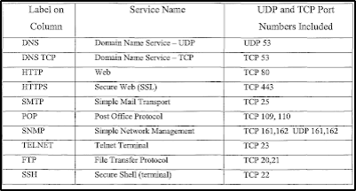

TCP:
1. FTP (21) = File Transfer Protocol (put or get a file of the server)
2. SSH (22) = Encrypted version of Telnet
3. Telnet (23) = Log into a machine remotely
4. SMTP (25) = Mail
5. DNS (53) = resolve IP addresses to names (Domain Name System). Eg: Google is the DNS for its IP address
6. HTTP (80) HTTPS (443) = Website. http is the non-secure version of the protocol, https is encrypted an secure.
7. POP3 (110) = Mail
8. SMB (139 + 445) - The most common ports and are linked to file shares.
9. IMAP (143) = Mail
UDP:
1. DNS (53)
2. DHCP (67,68) = Associates you with an IP address at random. The opposite is a static IP address.
3. TFTP (69) = Trivial FTP. The UDP version of the FTP.
4. SNMP (161) = Simple Network Managment Protocol, occasionally encountered on networks.